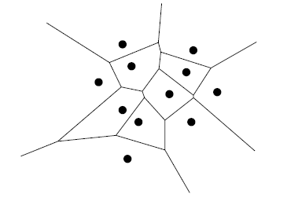
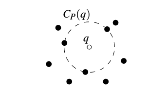
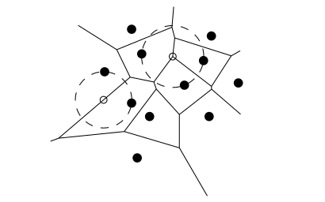

| Prev | Next |
Voronoi Diagram
Problem definition: Let P = {p1, p2, ..., pn} be a set of n points in 2D plane. Let q be any point in the plane. The Voronoi assignment model assigns q to its nearest pi. The subdivision induced by the model is called Voronoi diagram. The distance measure used is Euclidean distance.
More formally, Voronoi diagram Vor(P) is a subdivision of the plane into n cells, one for each point in P such that q lies in the cell corresponding to the point pi if and only if dist(q,pi) < dist(q,pj) for all j ≠ i.
An example of Voronoi diagram for a set of points is given below. Each point denoted by the black dot is closest to all the points in that cell.
- 
The cell of Vor(P) that corresponds to the point pi is referred to by V(pi).
Observations
We make a number of useful observations below. These are supported by theorems, proofs for which are not given here. Refer to Chapter 7 of Mark De Berg, et. al. for the proofs and details. Most of the observations are intuitive though.
1. For any two points pi and pj, the perpendicular bisector of segment(pi-pj) divides the plane into two open half-planes such that
- pi is closest to all points of one half-plane and
- pj is closest to all points of the other half-plane.
2. Each cell V(pi) is the intersection of n-1 half-planes obtained by bisecting segment(pi-pj) for all j ≠ i.
3. A cell need not be a closed polygon. It can be an open polygon too as can be observed in the above example. The other cells are open.
4. If all the points p1, p2, ..., pn are collinear, then Vor(P) will be a n-1 parallel lines.
5. Each Voronoi cell V(pi) is convex. This can be observed from the above example.
6. Each Voronoi cell V(pi) has at most n-1 vertices and edges. Does this imply the number of vertices and edges in Vor(P) is quadratic? NO!
- Outer cells have lesser vertices and edges since they are open.
- The average number of vertices per cell is less than 6.
- The number of vertices in Vor(P) is at most 2n - 5 and the edges is at most 3n - 6.
Hence, the number of vertices and edges of Vor(P) is linear. This leads us to an important observation.
7. We know that the edges of Vor(P) are part of the bisectors between every pair of segments and the vertices of Vor(P) are the intersections of the bisectors. We also know that quadratic pairs of segments, and hence quadratic bisectors exist. Therefore, we conclude that:
- Not all bisectors define the edges of Vor(P) and
- Not all intersections define the vertices of Vor(P).
8. So which intersections and bisectors define the vertices and edges of Vor(P)?
- A point q is a vertex of Vor(P) if and only if its largest empty circle CP(q) contains three or more sites on its boundary.
- The bisector between sites pi and pj defines an edge of Vor(P) if and only if there is a point q on the bisector such that CP(q) contains both pi and pj on its boundary but no other site.
|  |  |
Computing the Voronoi Diagram
1. Brute-force approach
The brute-force approach follows from the second observation: Each cell V(pi) is the intersection of n-1 half-planes obtained by bisecting segment(pi-pj) for all j ≠ i. Find the intersecting region of n-1 half- planes for each pi to determine the cell V(pi).
Each half-plane can be denoted by: akx + bky ≤ ck. For n-1 half-planes we will have n-1 such equations which can be solved using linear programming. We can also compute the intersection region the following way.
We know that half-planes are convex and the intersection of convex sets are convex. Hence, the intersecting region can be found by using divide-and-conquer algorithm.
Algorithm: Voronoi-Brute-Force
// Input: P = {p1, p2, ..., pn}
// Output: Vor(P)
Vor(P) = {}
for (each pi in P) {
H = {}
for (each pj in P and pj ≠ pi)
h(pi,pj) = Half-plane determined by perpendicular bisector of pi-pj
H = H ∪ { h(pi,pj) }
V(pi) = IntersectHalfPlanes(H)
Vor(P) = Vor(P) ∪ { V(pi) }
}
IntersectHalfPlanes(H) {
if (H contains a single halfplane h)
C = Region spanned by h
else
Divide H into two sets H1 and H2 of almost equal size
C1 = IntersectHalfPlanes(H1)
C2 = IntersectHalfPlanes(H2)
C = IntersectConvexRegions(C1, C2)
return C
}
The last computation IntersectConvexRegions(C1, C2) takes O(nlogn) time. We don't prove this here. Please look into Chapter 4.2 of Mark De Berg, et. al. for the details.
The time complexity of IntersectHalfPlanes can be determined by solving the recurrence equation below.
T(1) = 1 T(n) = 2T(n/2) + O(nlogn)
This yields time complexity of O(nlogn). By repeating this for half-planes corresponding to every other point, the overall time compexity to compute Vor(P) is O(n2logn).
2. O(nlogn) Fortune's algorithm
This algorithm uses plane-swee technique. For a high-level idea on how this algorithm works, check this link.
The general idea is simple to understand while implementation may be hard.